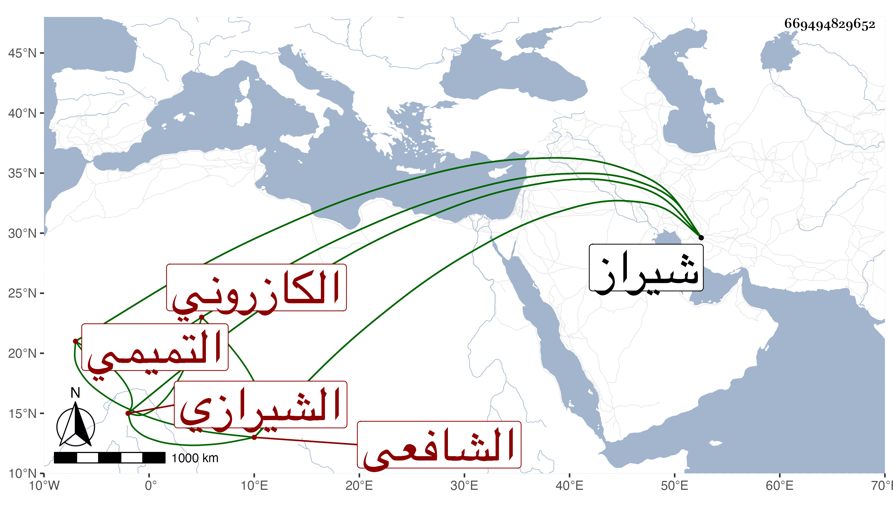

0902Sakhawi.DawLamic.ITO20230111-ara1.EIS1600.669494829652
Biography ID: 669494829652
943
سعد بن نظام بن جمال بن حسين بن حسوبة سعد الدين التميمي الكازروني ثم الشيرازي الشافعي . سمع على المجد اللغوي والشرف الجرهي وابن الجزري والفخر أبي القسم محمد بن أبي الخير محمد بن عمر بن حسين الكازروني ويعرف بالعبادي وابنه سعيد الدين الكازروني وكلاهما كما ذكر له اجازة من المزي وأخذ عن السيد نور الدين الايجي وسعد الدين البشيري ومعين الدين الجنيد الواعظ ونحوهم ، لقبه السيد العلاء بن السيد عفيف الدين فسمع منه أشياء وأذن له في الافتاء قال وهو رأس علماء شيراز والمفتين بها ، وله بعض التصانيف والحواشي وممن أخذ عنه السيد أحمد بن صفي الدين بل تزوج ابنته . مات بشيراز .
